This section describes the items of the preferences dialog.
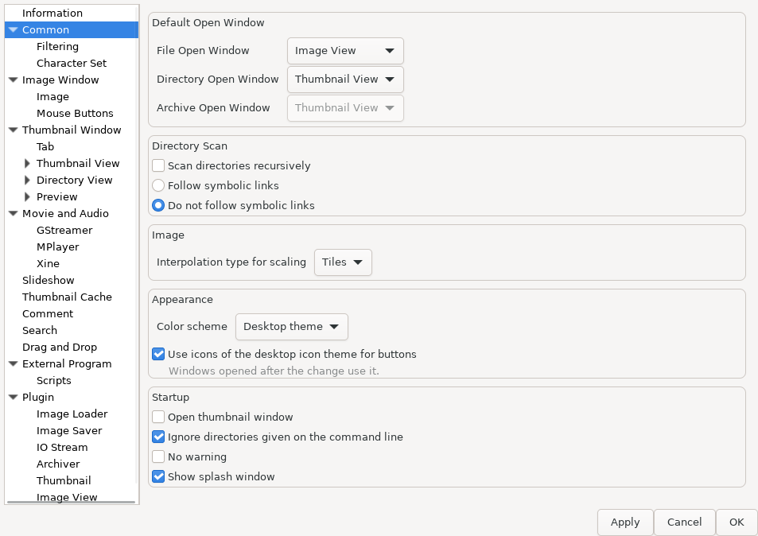
[Preferences | Common] (default settings)
The window a file is opened in when it is given on the command line or chosen with "OK" in the file open dialog.
Where nothing like "Open in ... window" is specified, this setting decides the window.
The window a directory given on the command line is opened in.
The window an archive given on the command line is opened in.
Directories given on the command line are always read recursively.
This is the same as the command line option -dR.
Whether directories that symbolic links point to are read when reading recursively.
The interpolation used when an image is scaled. One of these four:
Nearest: nearest neighbor. The fastest, but the result is coarse.
Tiles: like Nearest when enlarging; averages the pixels when reducing.
Bilinear: bilinear interpolation. A good balance of speed and quality.
Hyperbolic: the best quality, but slow.
The colors of the windows. One of these three; the change is used at once (Apply or OK). This item was added in the GTK 4 version (Desktop theme by default).
Desktop theme: the theme chosen on the desktop (gtk-theme-name of GTK; on X11 the XSETTINGS value Net/ThemeName). GTK 4 cannot read themes without a gtk-4.0 directory (themes for GTK 2/3) and shows the light Adwaita instead. If the name of such a theme contains "dark" (Greybird-dark, for example), the dark Adwaita is used.
Light: light colors. If the name of the theme ends with "-dark", the theme of the name without it is used, or Adwaita if GTK 4 cannot read that theme.
Dark: dark colors. If the theme has no dark version (gtk-dark.css), the dark Adwaita is used.
If the environment variable GTK_THEME is set, GTK uses that theme and this item has no effect. The icons of GImageView drawn only with black lines (Zoom, Show/Hide dotfiles, ...) are drawn with light lines in dark colors.
Toolbar and other buttons use icons of the desktop icon theme (Adwaita, Papirus, ...). Buttons with no matching icon in the theme, and the icons of the directory tree, use the icons of GImageView. Windows opened after the change use it. This item was added in the GTK 4 version (on by default).
To use your own icons, put files named after the icons (back.png, zoom_in.svg, refresh.xpm, ...; PNG, SVG and XPM can be used) in ~/.gimv/icons/<name>/ and write that name as iconset= in ~/.gimv/gimvrc. These icons take precedence over the icons of the theme.
Whether a thumbnail window is always opened when GImageView starts.
Directories given as arguments are ignored.
Suppresses the warning messages shown when started from the command line.
Whether the splash window (logo image) is shown at startup. This item was added in the GTK 4 version.
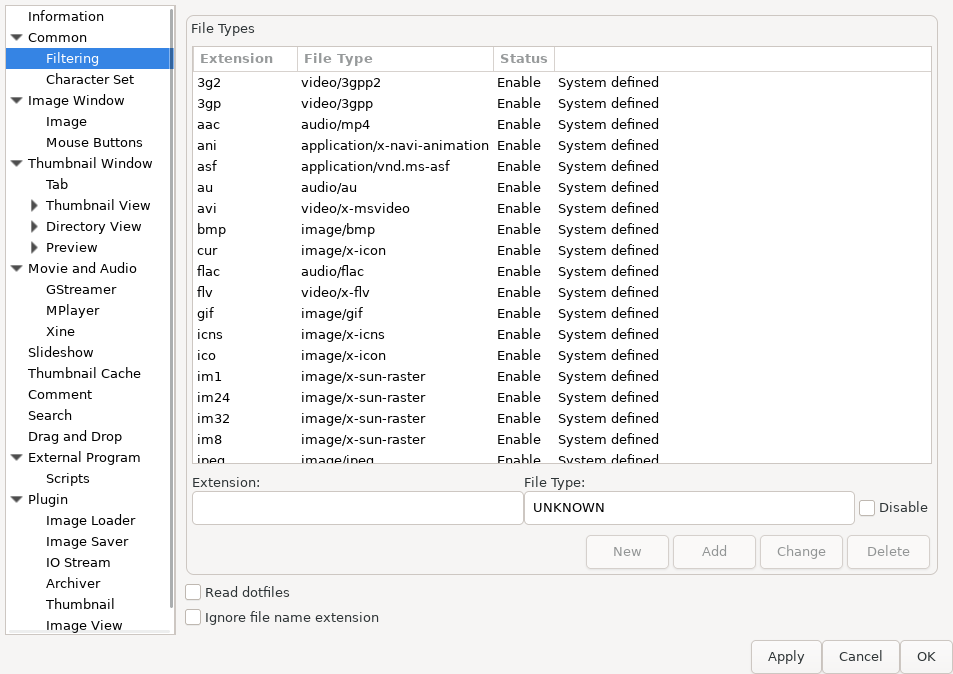
[Preferences | Common | Filtering] (default settings)
The list of file name extensions and their file types (MIME types). Files with an extension whose status is "Disable" are not read.
Enter an extension and a file type in the fields below the list and press "Add" to register a new pair. A registered pair can be selected and changed ("Change") or deleted ("Delete"). Checking "Disable" disables the extension. "System defined" pairs cannot be deleted.
Whether image files and directories whose names begin with "." are opened. The directory view has its own setting (6.3.3) and does not follow this one.
Files are not distinguished by their extensions; all files are candidates for reading.
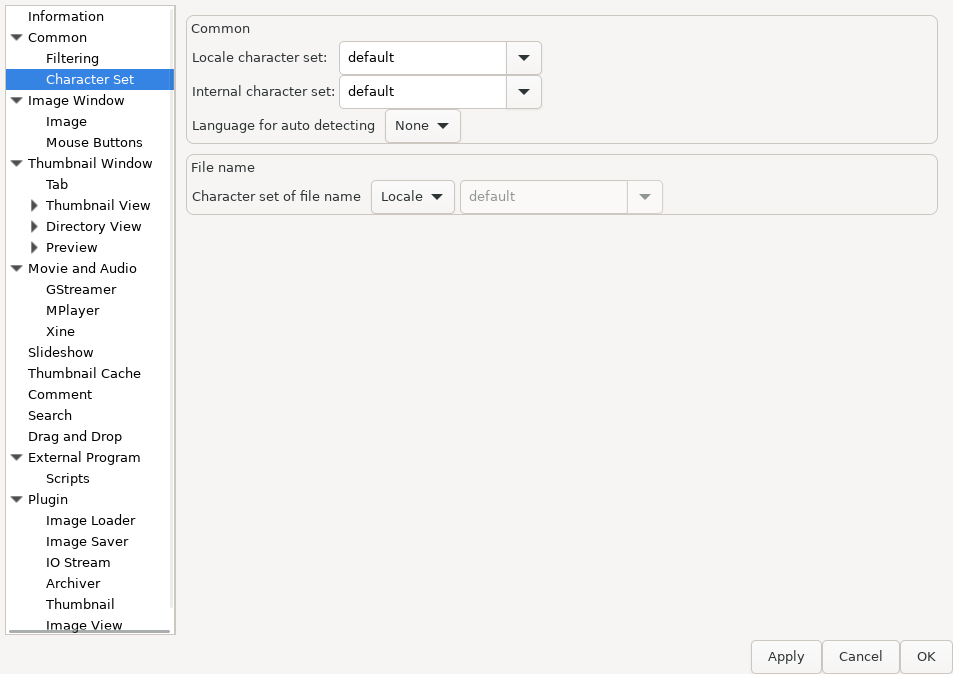
[Preferences | Common | Character Set] (default settings)
The character set of the locale, used for the comments of images.
The character set GImageView uses internally.
The language GImageView detects automatically.
The character set used, for example, to display file names. Choose from "Never convert", "Locale", "Auto detect" and "Any"; with "Any", enter the character set in the field to the right.
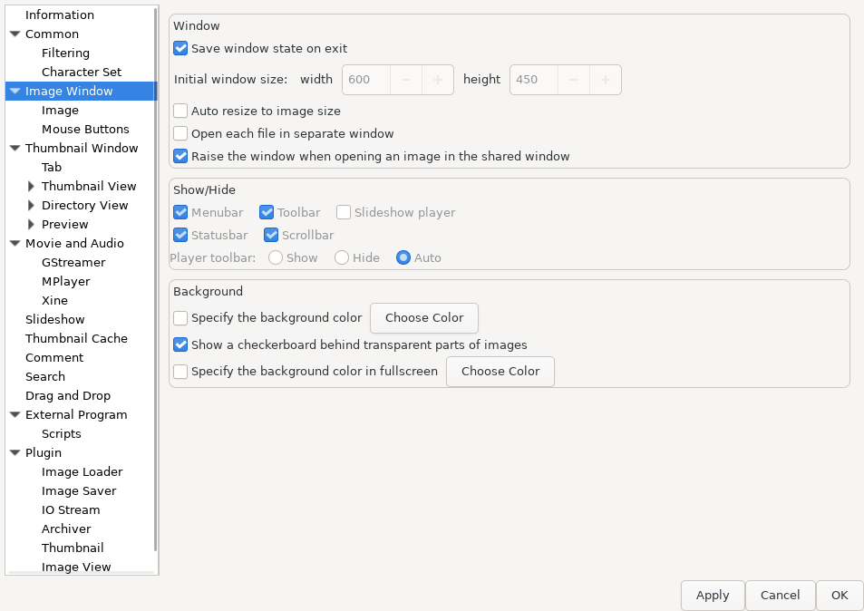
[Preferences | Image Window] (default settings)
The window size, the visibility of the bars and so on are saved on exit and used at the next start. When this is off, "Initial window size" and the "Show/Hide" items set the initial state.
The size (width and height) of a new image window.
A new image window is resized to the size of the image automatically.
In detail: the image window is first created with the "Initial window size" above; then, when this option is on, it is resized to the size of the image. Since this takes two steps, it takes more time.
A new image window is created for each file: as many image windows as files opened. These windows are never shared.
The shared image window is raised when an image is opened with "Open in Shared Window" of the thumbnail mouse menu.
Whether each bar is shown in a new image window. It can be set when Save window state on exit in [Preferences | Image Window] is off.
The scroll bars are shown only in the directions in which the image does not fit in the window. When this item is off, they are not shown even then.
How the toolbar for playing movies and audio is shown: "Show", "Hide", or "Auto", which shows it only while a movie or audio file is shown.
When checked, the background of images is painted with the color chosen with "Choose Color".
The background of images with transparency is shown as a gray checkerboard. This item was added in the GTK 4 version (on by default).
When checked, the background in fullscreen is painted with the color chosen with "Choose Color".
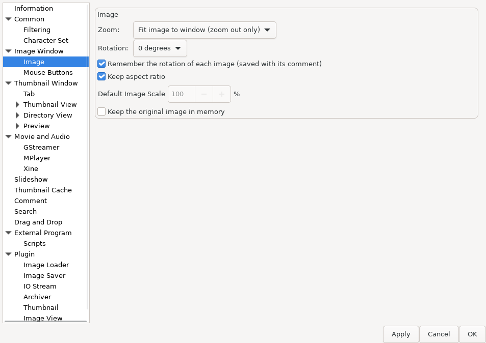
[Preferences | Image Window | Image] (default settings)
Settings for showing images in the image window.
The size an image is shown in. One of:
Default image scale: the "Default Image Scale" below.
Do not change: the scale of the image shown before.
Fit image to window: enlarges or reduces the image to the size of the window.
Fit image to window (zoom out only): reduces only images larger than the window (default).
Fit image to width / Fit image to height: fits the width or the height to the window.
The orientation an image is shown in. Besides 0, 90 degrees counterclockwise, 180 and 90 degrees clockwise, "Do not change" (the orientation of the image shown before) can be chosen. When built with EXIF support, "Automatic EXIF" can be chosen too.
When an image is rotated, its orientation is saved where its comment is kept, and the image is shown in that orientation the next time it is opened. This item was added in the GTK 4 version (on by default).
The aspect ratio (the ratio of width and height) is kept when an image is enlarged or reduced.
The default scale of images. It can be set when "Zoom" is "Default image scale" or "Do not change".
The image shown is kept in memory. For the effect, see "Making the image view draw faster" in the Tips.
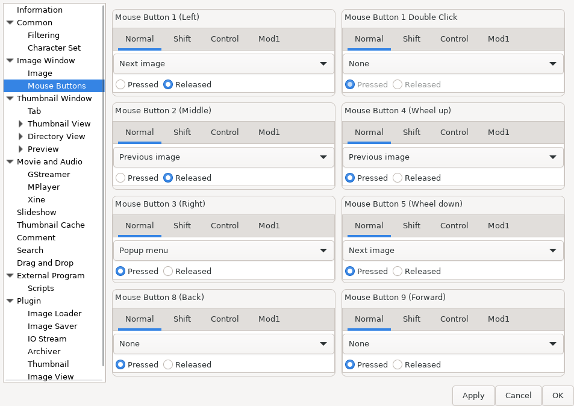
[Preferences | Image Window | Mouse Buttons] (default settings)
Assigns functions to the mouse buttons. For each button (left, middle, right, wheel up and down, double click of the left button, and the side buttons "back" (button 8) and "forward" (button 9)), choose on the tabs of the modifier keys (Normal, Shift, Control, Mod1 (Alt)) the function and whether it runs when the button is pressed or released. Buttons 8 and 9 do nothing by default.
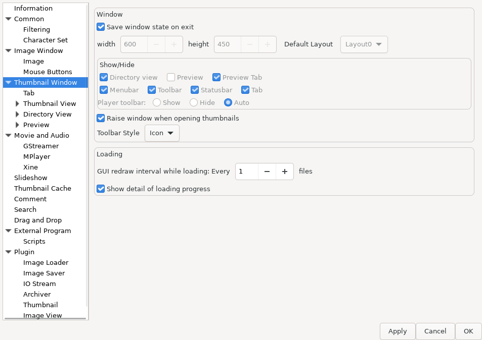
[Preferences | Thumbnail Window] (default settings)
The window size, the layout, the visibility of each part and so on are saved on exit and used at the next start. When this is off, "width", "height", "Default Layout" and the "Show/Hide" items set the initial state.
The size of a new thumbnail window.
The arrangement of the views (directory, thumbnail and preview) in the thumbnail window: Layout0 to Layout4, or Custom. These are the same as View | Layout of the menu.
Whether the directory view, the preview, the preview tab, the menu bar, the toolbar, the status bar and the tabs are shown in a new thumbnail window.
How the toolbar for movies and audio in the preview is shown. "Auto" shows it only while a movie or audio file is shown.
Whether the window is raised when the thumbnails have been loaded.
This applies also to "Load Thumbnails Recursively": the thumbnail window is raised each time the thumbnails of a directory have been loaded.
Whether the toolbar buttons show an icon, text, or both.
The thumbnail view is redrawn at this interval while thumbnails are created.
It is redrawn every this many files. See also "Making the thumbnail view finish drawing faster" in the Tips.
While thumbnails are loaded, the progress bar shows "loaded/total files" and the name of the file being loaded.
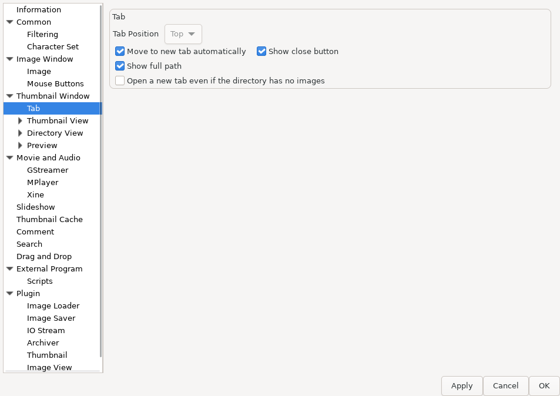
[Preferences | Thumbnail Window | Tab] (default settings)
The position of the tabs of the window.
This item takes effect only when "Save window state on exit" in [Preferences | Thumbnail Window] is off.
A new tab becomes the active tab.
A close button is shown at the right end of each tab.
Tabs normally show the full path. Without this option they show only the name of the directory, which keeps the tabs narrow.
A tab is opened also for a directory that has no images.
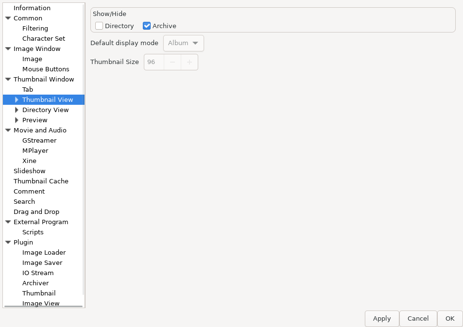
[Preferences | Thumbnail Window | Thumbnail View] (default settings)
Whether directories and archives are shown in the thumbnail view.
The default display mode of the thumbnail window. It can be set when Save window state on exit in [Preferences | Thumbnail Window] is off.
The default thumbnail size. It can be set when Save window state on exit in [Preferences | Thumbnail Window] is off.
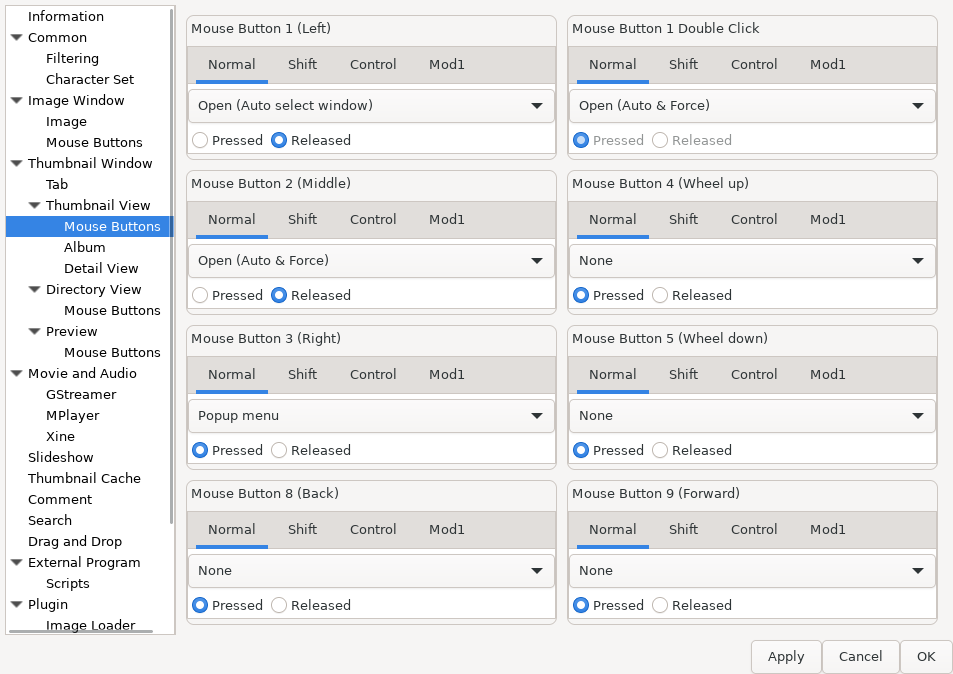
[Preferences | Thumbnail Window | Thumbnail View | Mouse Buttons] (default settings)
Assigns functions to the mouse buttons. For each button (left, middle, right, wheel up and down, double click of the left button, and the side buttons "back" (button 8) and "forward" (button 9)), choose on the tabs of the modifier keys (Normal, Shift, Control, Mod1 (Alt)) the function and whether it runs when the button is pressed or released. Buttons 8 and 9 do nothing by default.
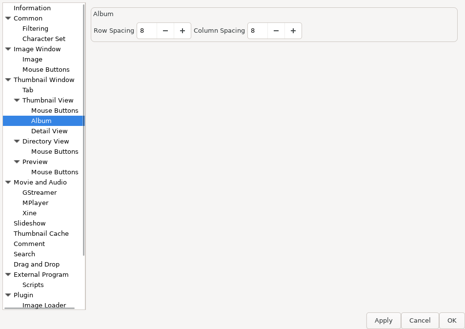
[Preferences | Thumbnail Window | Thumbnail View | Album] (default settings)
Settings for the display modes "Album", "Album2" and "Album3". For pictures of the display modes, see the display mode of the thumbnail view in section 4.1.
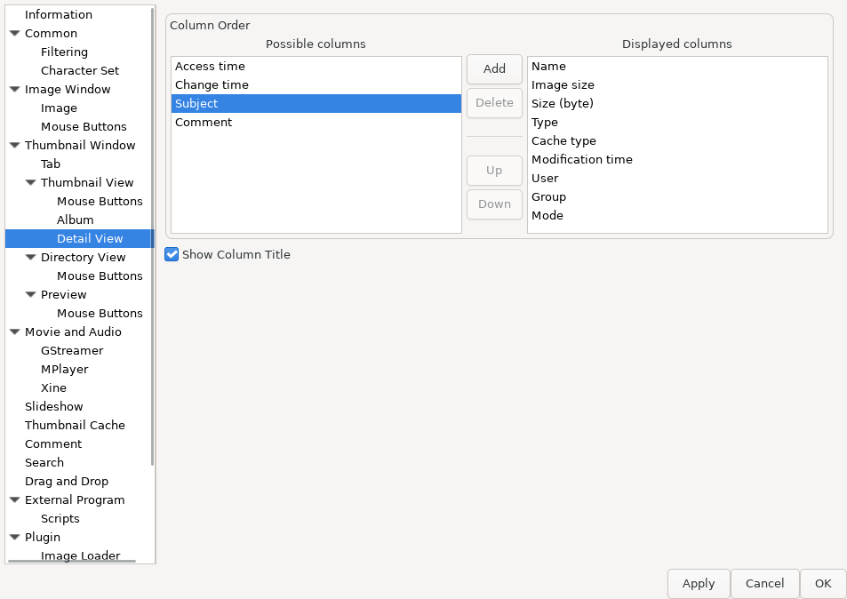
[Preferences | Thumbnail Window | Thumbnail View | Detail View] (default settings)
The columns shown in the display modes "Detail", "Detail + Icon" and "Detail + Thumbnail". The items in "Displayed columns" on the right are shown. "Add" and "Delete" move items, "Up" and "Down" change their order. "Show column title" shows or hides the column titles.
The GTK 4 version adds the "Subject" and "Comment" (first line of the note) columns of the comments. To show them, move them to the right pane. When a comment is saved or deleted, the list shown is updated at once. In the album view, the subject and the note of an image with a comment are shown as a tooltip when the mouse is over it.
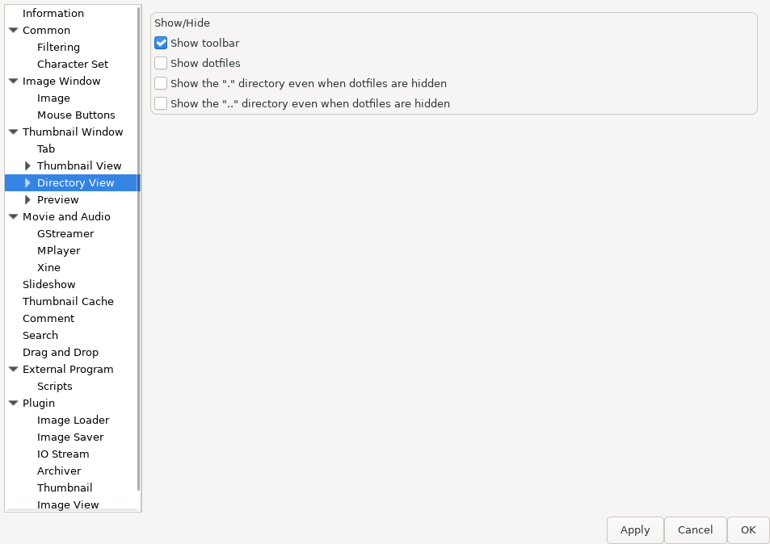
[Preferences | Thumbnail Window | Directory View] (default settings)
The toolbar of the directory view is shown.
Dotfiles (directories beginning with ".") and "." and ".." are shown in the directory view.
The "." directory is shown in the directory view even when "Show dotfiles" is off.
The ".." directory is shown in the directory view even when "Show dotfiles" is off.
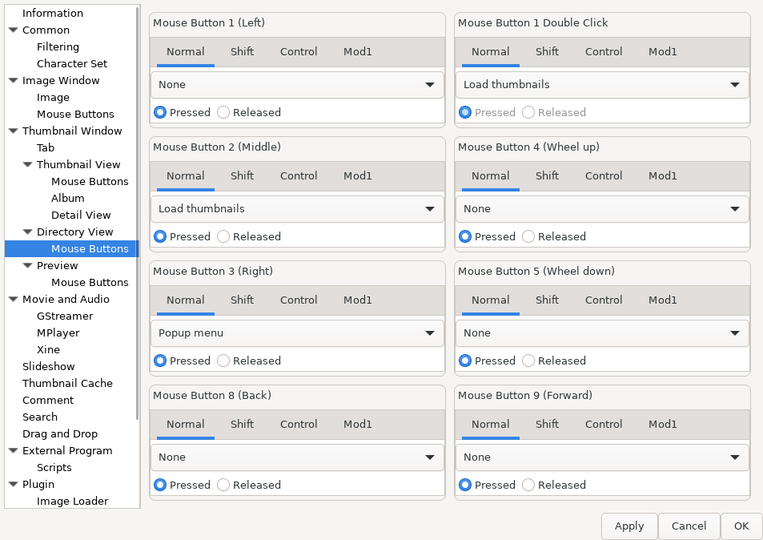
[Preferences | Thumbnail Window | Directory View | Mouse Buttons] (default settings)
Assigns functions to the mouse buttons. For each button (left, middle, right, wheel up and down, double click of the left button, and the side buttons "back" (button 8) and "forward" (button 9)), choose on the tabs of the modifier keys (Normal, Shift, Control, Mod1 (Alt)) the function and whether it runs when the button is pressed or released. Buttons 8 and 9 do nothing by default.
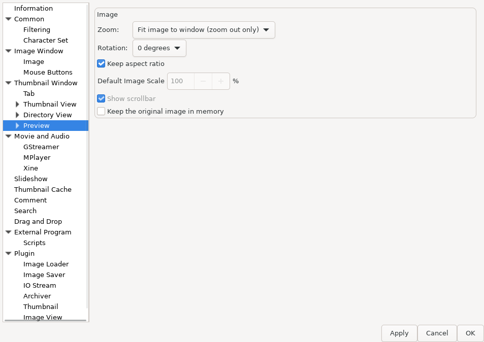
[Preferences | Thumbnail Window | Preview] (default settings)
Settings for showing images in the preview. "Zoom", "Rotation", "Keep aspect ratio", "Default Image Scale" and "Keep the original image in memory" mean the same as the items of the image window (6.2.1).
The scroll bars are shown. It can be set when Save window state on exit in [Preferences | Thumbnail Window] is off. They are shown only in the directions in which the image does not fit.
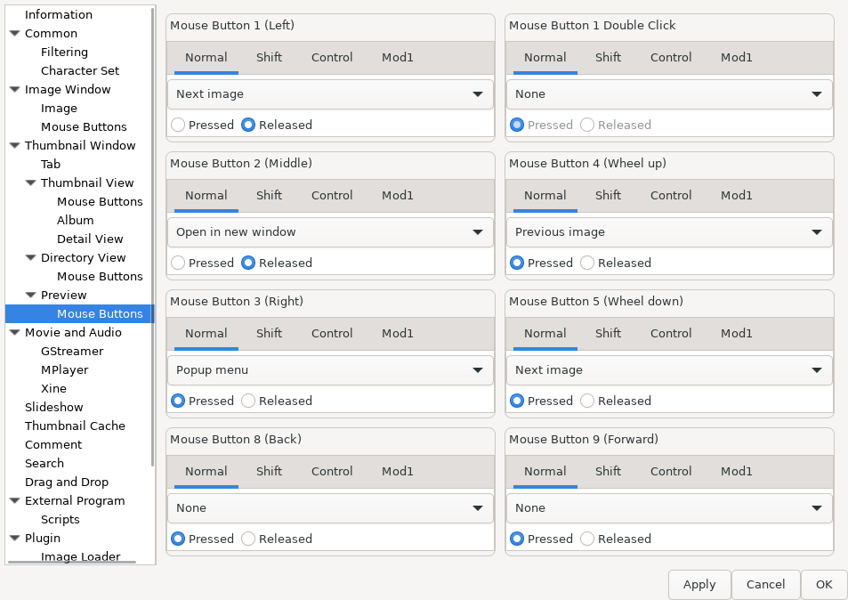
[Preferences | Thumbnail Window | Preview | Mouse Buttons] (default settings)
Assigns functions to the mouse buttons. For each button (left, middle, right, wheel up and down, double click of the left button, and the side buttons "back" (button 8) and "forward" (button 9)), choose on the tabs of the modifier keys (Normal, Shift, Control, Mod1 (Alt)) the function and whether it runs when the button is pressed or released. Buttons 8 and 9 do nothing by default.
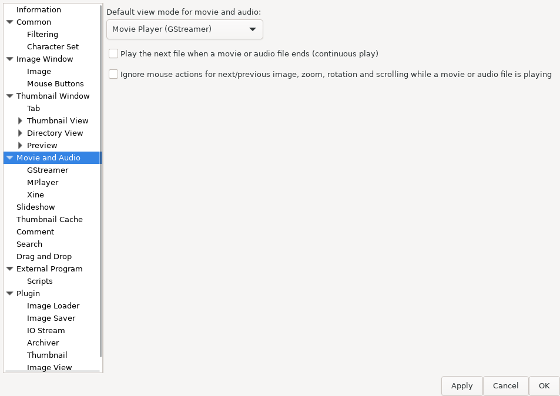
[Preferences | Movie and Audio] (default settings)
The plugin that plays movie and audio files (GStreamer, MPlayer or Xine, those that are built in).
When playback ends, the next file is opened and played. This item was added in the GTK 4 version (off by default).
Prevents mistakes during playback. A popup menu assigned to a mouse button can still be used. This item was added in the GTK 4 version (off by default).
The pages "GStreamer", "MPlayer" and "Xine" below it set whether the plugin makes thumbnails of movies and the position used for them (stream position). The MPlayer and Xine pages also set the drivers. A page is shown for each built-in plugin.
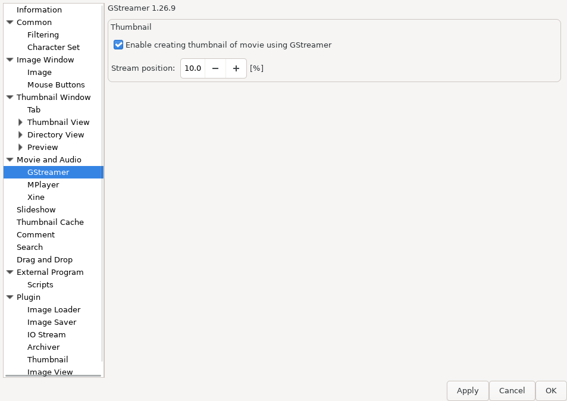
[Preferences | Movie and Audio | GStreamer] (default settings)
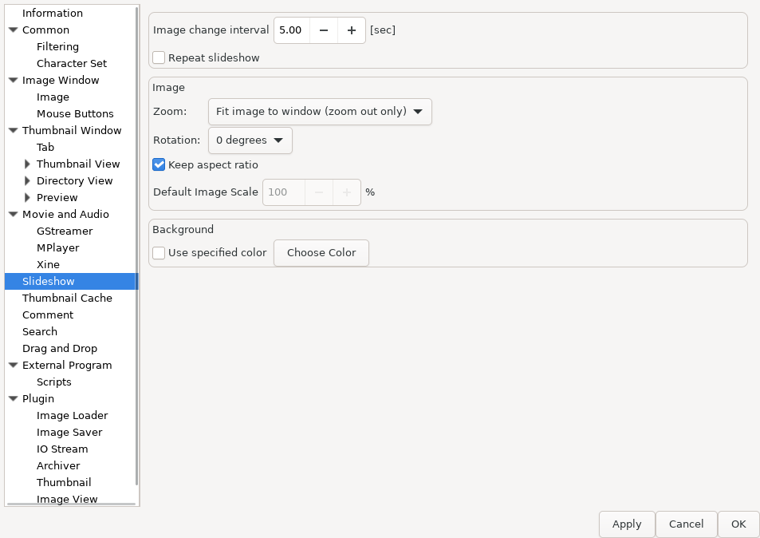
[Preferences | Slideshow] (default settings)
The time each image is shown in a slideshow.
A slideshow normally ends after all images of the thumbnail view; with this option it starts over.
Settings for showing images in a slideshow. The items mean the same as those of the image window (6.2.1).
When "Use specified color" is checked, the background of the slideshow is painted with the color chosen with "Choose Color".
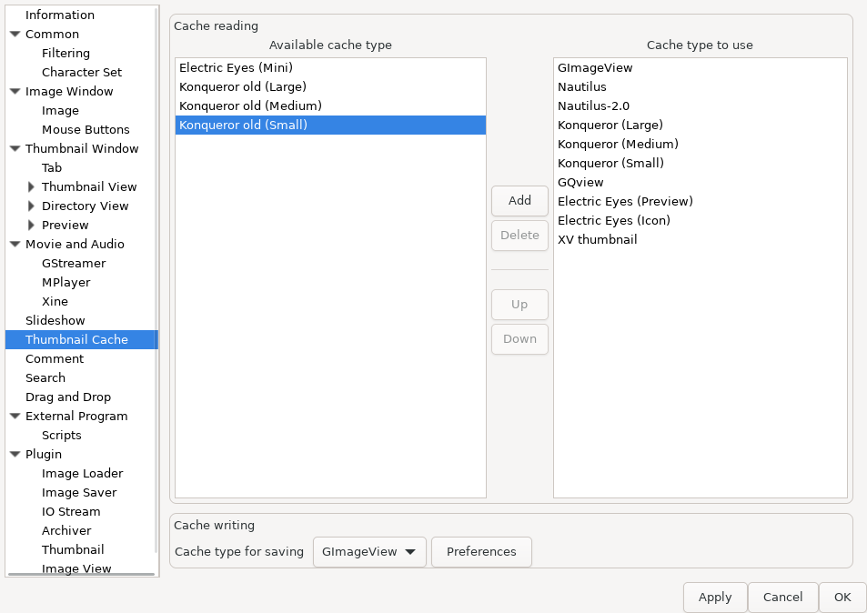
[Preferences | Thumbnail Cache] (default settings)
The file formats of the thumbnail cache for reading and writing.
Caches of the formats in "Cache type to use" on the right are searched from the top and read. "Add" and "Delete" move items, "Up" and "Down" change their order.
The format of the cache saved when a thumbnail is made. "Preferences" changes the settings of the chosen format.
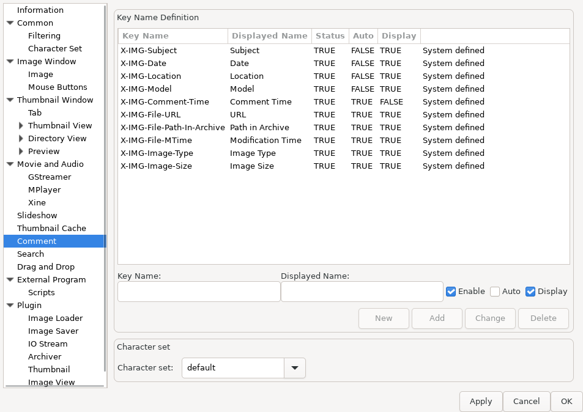
[Preferences | Comment] (default settings)
The keys used in comments and the character set.
The list of the items (keys) of comments. Keys whose "Status" is disabled are not used. For keys with "Auto" enabled, the value is set from the image file automatically. Keys with "Display" enabled are shown in the comment editor. The fields below the list create, add, change and delete keys.
The character set of the comment files.
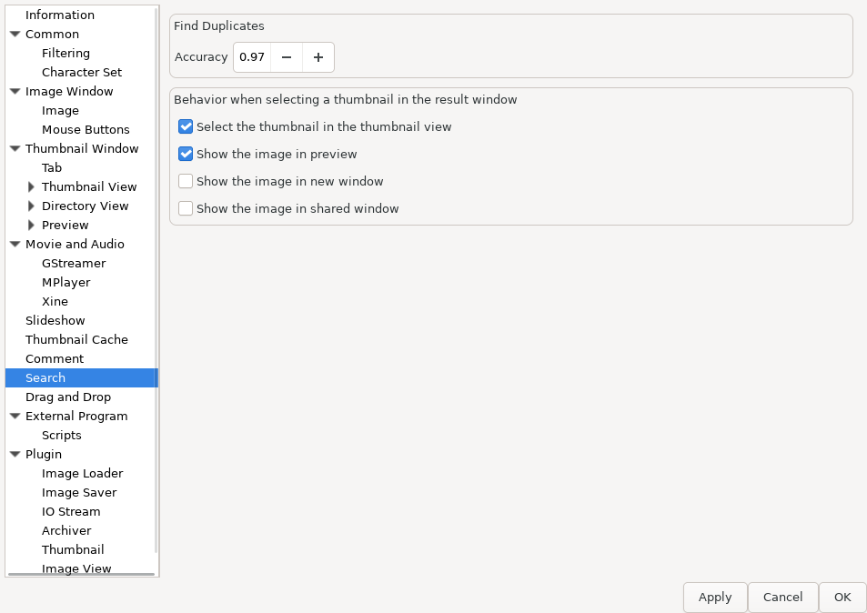
[Preferences | Search] (default settings)
The accuracy of [Tools | Find Duplicates | Similarity]. The default is 0.97: images that match 97% or more are listed. See "Finding similar images" for details.
What happens when a thumbnail is selected in the result window: selecting the same thumbnail in the thumbnail view, showing the image in the preview, in a new window, or in the shared window - each can be turned on or off.
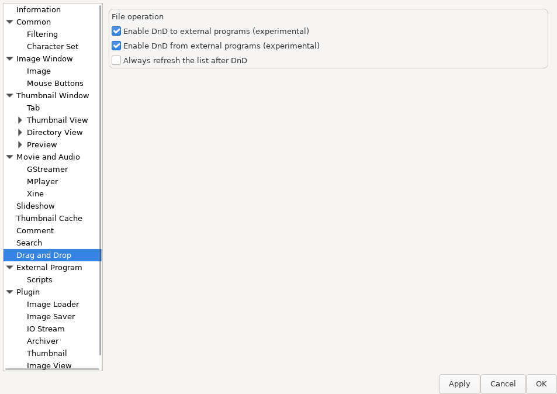
[Preferences | Drag and Drop] (default settings)
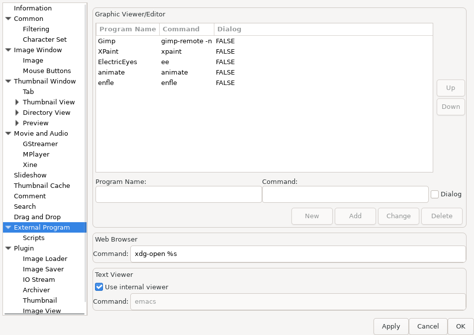
[Preferences | External Program] (default settings)
The external programs GImageView uses.
"Image Viewer/Editor" is the list of programs shown in "Open in External Program" of the mouse menu. Enter a program name and a command to add, change or delete an entry; "Up" and "Down" change the order. When "Dialog" is checked, a dialog is shown before the program runs.
"Web Browser" opens the HTML documents and the manual of the Help menu. %s is replaced with the path of the document. The default of the GTK 4 version is xdg-open %s (the default browser of the desktop). If the old default mozilla %s is saved, it is replaced with xdg-open %s automatically.
When "Use internal viewer" of "Text Viewer" is on, text documents are shown in the viewer built into GImageView. It detects UTF-8, EUC-JP, Shift_JIS and ISO-2022-JP documents automatically.
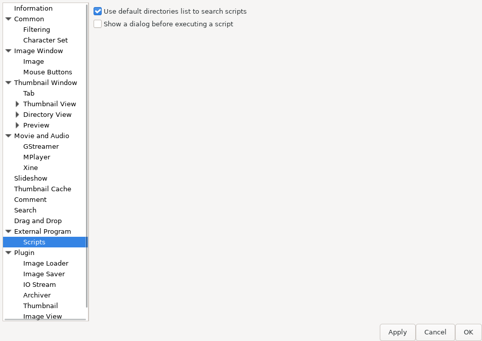
[Preferences | External Program | Scripts] (default settings)
The directories of the scripts GImageView uses. When "Use default script search directories" is off, the directories can be specified. "Show dialog before executing script" sets whether a dialog is shown before a script runs.
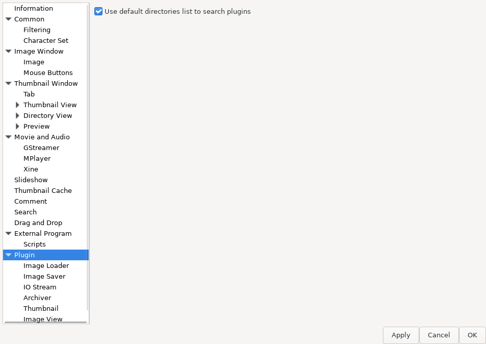
[Preferences | Plugin] (default settings)
The directories GImageView searches for plugins. When "Use default plugin search directories" is off, the directories can be specified.
The pages below it, "Image Loader", "Image Saver", "IO Stream", "Archiver", "Thumbnail", "Image View" and "Thumbnail View", list the plugins that are loaded.
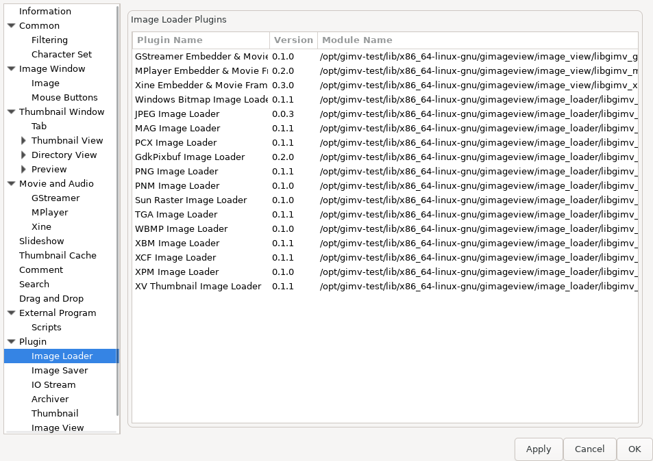
[Preferences | Plugin | Image Loader] (the location in "Module name" depends on where it is installed)